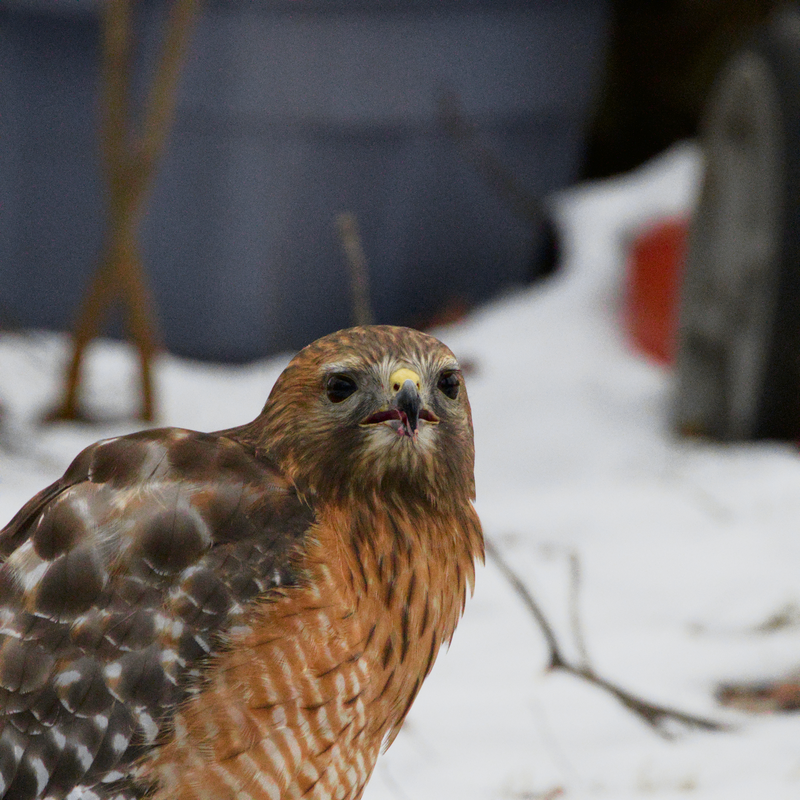

About
About ITIS3135

This page is built in part to demonstrate my work for the UNC Charlotte course ITIS3135 - Front-End Web Application Development, taught by Mr. von Briesen. Additional information about the course can be found on the ITIS3135 course website .
This course provides students with relevant experience in front-end web application development by building multiple websites using a variety of tools, techniques, and web development standards.
Tools Used in the Course
- VS Code
- Opencode
- Emmet in VS Code
- SFTP via FileZilla
- Git
- Various browser tools
- The Accumulus Validator
Sites Built in the Course
- A personal home portfolio
- This course site
- A fictitious or aspirational design firm site
- A Crappy Page demonstrating poor web design practices
- A whimsical product company
- A student, colleague, or peer management tool
- A client project website